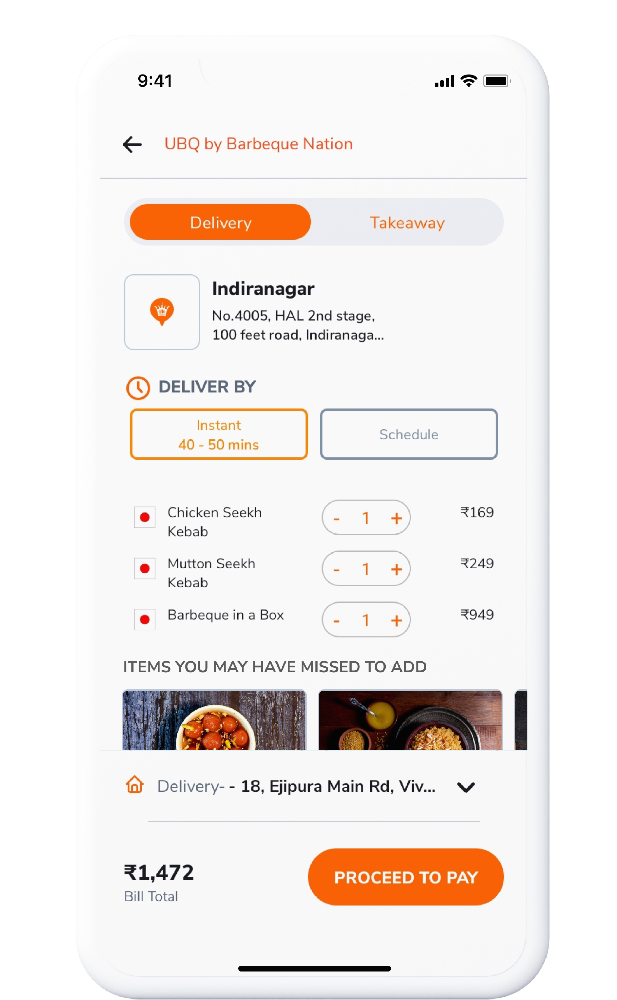
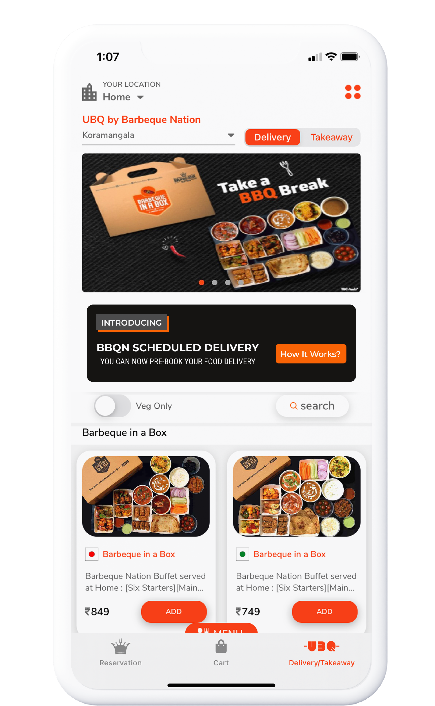
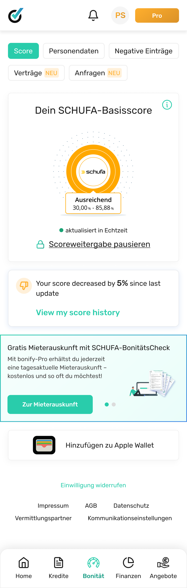
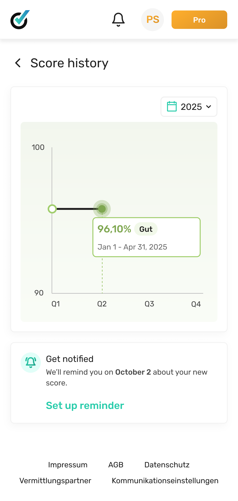

I've spent 7+ years making complex information feel like something a person can actually act on. Right now I do that for millions of people through their credit data at bonify.
Not just what I shipped, but the problems I was trying to solve, the ideas I chose to let go of, and whether the work actually made a difference.
Every credit card was shown the same way, to everyone. People couldn't tell which one fit them, so they disengaged before applying. I benchmarked five marketplaces, then used bonify's own credit data to add approval-chance, smarter filters, and offer cards with a real hierarchy. Lead conversion went up 233%.
Read case study →

It wasn't a full redesign. It was removing one step that everyone on the team had decided was necessary — the data said otherwise. I reworked the cart and delivery-timing step so people could commit in one tap. Three months later: 12% more orders completed, time-to-checkout down 20%.
Read case study →

The brief was: show people their credit score over time. The real problem was that a single number on a graph meant nothing to most people — and 'more context' was making things worse, not better. I killed two directions before landing on one that got 60K users in the first month. We'd targeted 20K.
Read case study →A few things about me that don't change, whatever the project happens to be.
I'd rather understand the problem than rush to a brief. So I spend time with the data and talk to real people before I sketch a single screen.
The best work usually starts with a better question. I like to poke at assumptions early, so the team doesn't end up building the wrong thing beautifully.
I write things down, the specs, the reasoning, the context, so they don't live only in my head. That way decisions hold up across time zones and I'm not a bottleneck in every conversation.
I team up with developers from the very first day. The best products come from designers and engineers thinking together, not handing work back and forth.
I mentor on ADPList. Not because I have all the answers — I've just made enough mistakes to know which ones are worth making and which ones will cost you three weeks and a difficult conversation with your PM.
Most designers I talk to know what good design looks like. What's harder is explaining why — in a room where the PM has a different interpretation and the engineer is already building. That gap between taste and language is what I work on.
Want a session?
Book on ADPList →What I admire most about Pramodini is her ability to simplify complex problems. She keeps both users and stakeholders aligned throughout the process.
Pramodini doesn't just design great experiences — she creates an environment where collaboration thrives. She listens, iterates, and always pushes for the best outcome.
Her mentorship gave me the confidence to take on bigger challenges and approach design with more clarity.